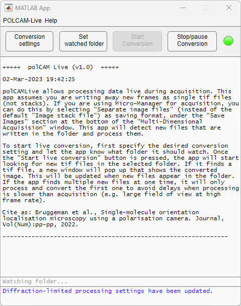

Software: POLCAM-Live
POLCAM-Live is a standalone MATLAB application for live polarisation camera image processing and visualization during image acquisition. The source code is available on github at https://github.com/ezrabru/POLCAM-Live
Download the latest stable installer here: Download installer
System requirements
- MATLAB license
- MATLAB Toolboxes: Parallel Computing, Optimization, Image processing, Curve fitting, Statistics and Machine Learning
- The software has been tested on Windows (Windows 11 Pro Version 22H2). The software was developed and tested using MATLAB version R2022a.
Installation guide
POLCAM-Live can be installed as a standalone MATLAB App by downloading the installer and following the instructions. Click here to download the latest stable installer.
The typical install time on a standard desktop computer takes a few minutes. If you encounter any issues during installation, please email us at eb758@cam.ac.uk or report an issue on the github repository.
Demo
To use POLCAM-Live during acquisition, data needs to be written away as individual images instead of stacks (this is possible in Micro-Manager). In POLCAM-Live, start by setting the conversion settings to match the system. Then set the watched folder by navigating to the folder in which the images are being written away. Now you are ready to click the "Start Conversion" button. The display of the processed images is completely independent of image acquisition. The results that are being displayed are not being saved.
